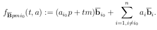
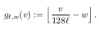
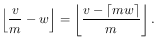
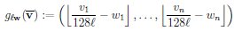
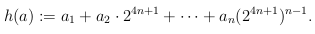

| Safe Haskell | None |
|---|
Algorithms.USV.USV
Contents
Description
This module provides an implementation of the main Unique Shortest Vector algorithm.
- f_classical :: [[Integer]] -> Int -> Int -> Int -> (Int, [Int]) -> [Integer]
- f_quantum :: [[Integer]] -> Int -> Int -> Int -> TwoPoint -> Circ [QDInt]
- g1_classical :: Integer -> Double -> Integer -> Integer
- g_classical :: Integer -> [Double] -> [Integer] -> [Integer]
- g1_quantum :: Integer -> Double -> QDInt -> Circ QDInt
- g_quantum :: Integer -> [Double] -> [QDInt] -> Circ [QDInt]
- h_classical :: [IntM] -> IntM
- h_quantum :: [QDInt] -> Circ QDInt
- uSVP :: [[Integer]] -> Circ [Integer]
- usvp_aux :: Int -> [[Integer]] -> [(Int, Int, Int, Int)] -> StdGen -> Circ [Integer]
- algorithm_Q :: [[Integer]] -> (Int, Int, Int, Int) -> StdGen -> Circ [Integer]
- algorithm_R :: [[Integer]] -> Int -> Int -> Int -> Int -> StdGen -> Circ TwoPoint
- tPP :: Int -> [TwoPoint] -> Circ [Integer]
- n_low_bits :: Int -> Int -> Psi_k -> [Bool]
- pairing :: Int -> Int -> [Psi_k] -> ([(Psi_k, Psi_k)], [Psi_k])
- sieving :: Int -> Int -> [Psi_k] -> Circ [Psi_k]
- dCP :: Int -> Integer -> Int -> [CosetState] -> Circ Integer
Coherent arithmetic
Some arithmetic functions used in the reductions of the USV to the TPP and of the TPP to the DCP.
f_classical :: [[Integer]] -> Int -> Int -> Int -> (Int, [Int]) -> [Integer]Source
Compute the function f, that selects a subset of lattice points. It is defined as:

The arguments are:
- bb_bar, an n-dimensional matrix;
- p, a prime such that n ≤ p ≤ 2n;
- m, an integer such that 1 ≤ m ≤ p-1;
- i0, an integer index such that 0 ≤ i0 ≤ n-1;
- t, an integer (either 0 or 1);
- a=(a1,...,an), an integer vector.
f_quantum :: [[Integer]] -> Int -> Int -> Int -> TwoPoint -> Circ [QDInt]Source
Quantum version of f_classical.
g1_classical :: Integer -> Double -> Integer -> IntegerSource
Compute the function g defined as:

The arguments are:
- l, an integer (in principle, a real number, but the GFI only uses integer values);
- w, a real number in the interval [0,1);
- v, an integer.
We note that in the quantum version of this function, l and w will be parameters, and v will be a quantum input. We implement this operation using only integer division, using the following property: for all integers v, m and real numbers w,

g_classical :: Integer -> [Double] -> [Integer] -> [Integer]Source
Compute the function g. The function g partitions the space into hypercubes of size 128l at a random offset w. It is defined as:

This is just the componentwise application of g1_classical.
g1_quantum :: Integer -> Double -> QDInt -> Circ QDIntSource
Quantum version of g1_classical.
h_classical :: [IntM] -> IntMSource
Compute the function h, defined as:

The function h transforms a vector a=(a1,...,an) of 4n-bit integers into a 4n2+n-bit integer by inserting a 0 between each component of a.
Algorithm 1: "uSVP"
uSVP :: [[Integer]] -> Circ [Integer]Source
Find the shortest vector. The argument, bb, is an
n-dimensional integer matrix. The algorithm first uses
bb to generate a list of parameter tuples and then
recursively goes through this list by calling algorithm_Q
on each tuple until it either finds the shortest vector
or exhausts the list and fails by returning 0.
Remark:
- Argument n is redundant, it can be inferred from bb.
usvp_aux :: Int -> [[Integer]] -> [(Int, Int, Int, Int)] -> StdGen -> Circ [Integer]Source
For each tuple of parameters, call algorithm_Q and
then test whether the returned vector is the shortest vector
in the lattice. If it is, return it. If not, move on to
the next tuple. If the end of the list is reached, return 0.
Remark:
- The algorithm takes as additional argument a random number generator. At each iteration, a new seed is extracted and used by the next iteration's generator.
Algorithm 2: "Q"
algorithm_Q :: [[Integer]] -> (Int, Int, Int, Int) -> StdGen -> Circ [Integer]Source
Compute algorithm_Q. The arguments are:
- bb_bar, an n-dimensional LLL-reduced basis;
- (l,m,i0,p), a 4-tuple of integer parameters;
- randomgen, a random number generator.
The algorithm first calls algorithm algorithm_R to prepare
a list of TwoPoints parameterized on (l,m,i0,p) and
then calls tPP on this list. With high probability, the
returned vector is the shortest vector in the lattice up to
one component.
Remark:
- Argument n is redundant, it can be inferred from bb_bar.
Algorithm 3: "R"
algorithm_R :: [[Integer]] -> Int -> Int -> Int -> Int -> StdGen -> Circ TwoPointSource
Compute algorithm_R. The arguments are:
- bb_bar, an n-dimensional LLL-reduced basis,
- l, an integer approximation of the length of the shortest vector,
- p, a prime such that n ≤ n ≤ 2n,
- m, an integer such that 1 ≤ m ≤ p-1,
- i0, an integer index such that 0 ≤ i0 ≤ n-1 and
- randomgen, a random number generator.
The algorithm first calls the functions f_quantum and
g_quantum to prepare a superposition of hypercubes
containing at most two lattice points, whose difference
is the shortest vector. It then measures the output to
collapses the state to a TwoPoint.
Algorithm 4: "TPP"
Algorithm 5: "DCP"
n_low_bits :: Int -> Int -> Psi_k -> [Bool]Source
Given integers m and n and a Psi_k (q,k)
compute the last n bits of the binary expansion
of k on m bits.
pairing :: Int -> Int -> [Psi_k] -> ([(Psi_k, Psi_k)], [Psi_k])Source
Given integers m and n and a list l of Psi_ks, group the
elements of l into pairs (psi_p, psi_q) where
p and q share n low bits. Return the list of all such
pairs together with the list of unpaired elements of l.
sieving :: Int -> Int -> [Psi_k] -> Circ [Psi_k]Source
Perform Kuperberg's sieve. The arguments are:
- n, an integer,
- m, an integer and
- l, a list of
Psi_ks.
The algorithm recursively combines and sieves the
elements of l until it reaches a list whose
elements have m2 trailing zeros.
At each step, the list of remaining Psi_ks are
paired and each pair
((q1, k1), (q2, k2))
is combined into a new Psi_k (q, k) with
k= k1 ± k2.
If k= k1 - k2, the Psi_k is preserved,
otherwise it is discarded.
Remark:
- Uses
dynamic_liftto determine whether to keep a discard aPsi_k.
dCP :: Int -> Integer -> Int -> [CosetState] -> Circ IntegerSource
Perform Kuperberg's algorithm solving the Dihedral Coset problem. The arguments are:
- n, an integer measuring the length of the output,
- d, an integer to hold the output initially set to 0,
- s, an integer counter initially set to 0 and
- states, a list of
CosetStates.
The algorithm proceeds recursively. At each iteration it uses Kuperberg's sieve on the first n elements of states to compute the s-th bit of the output and updates d with the result. Then it increments s and repeats until states is exhausted.
Remark:
- The function
dynamic_liftused in this algorithm is presumably very expensive in terms of resources. In this implementation it is used profusely but there is room for optimization.